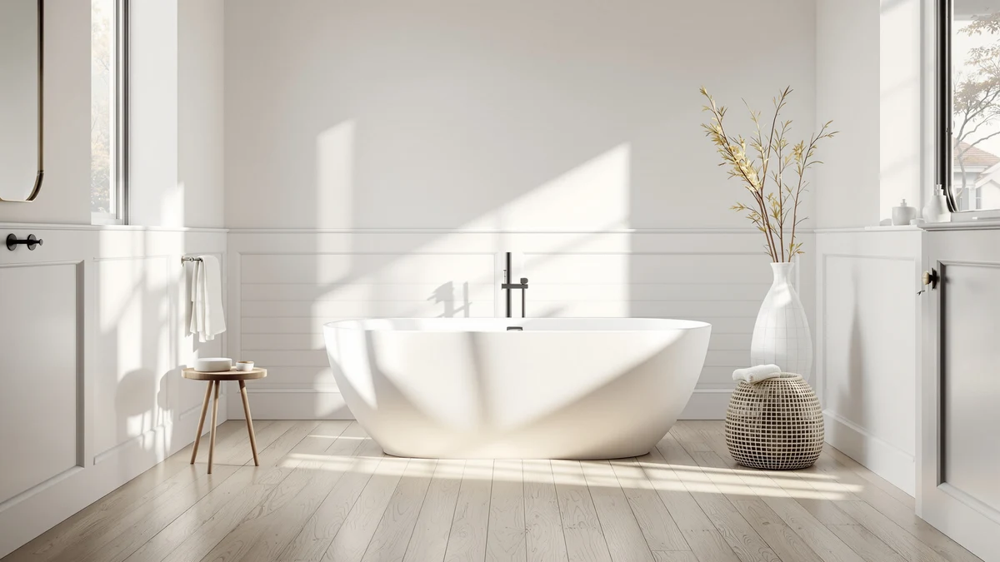

Medunjess Free Standing Tub Review (2026): Worth It?
Prices and picks verified as of November 2026. Independent, reader-supported reviews.


Quick Answer
This Medunjess free standing tub review points to the MEDUNJESS 65'' Free Standing Tub as the pick for a bathroom with real floor clearance, since its 65 inch length beats every alternative here by at least eight inches. If your bathroom is tighter or you want a confirmed shell material, the 51'' Japanese Soaking Tub, the 55'' Stone Resin tub, and the CubisVeta 57'' alternative below trade that length for a smaller footprint or a lower price.
Our pick: MEDUNJESS 65'' Free Standing Tub, $1,498.00 Check Price on Amazon
Bottom line: our top pick is the MEDUNJESS 65'' Free Standing Tub at $1,498.
Things to Know Before You Buy
- This Medunjess free standing tub review compares four oval soaking tubs ranging from 51 to 65 inches long, three from Medunjess and one from CubisVeta.
- Prices sit close together, from $1,450.99 to $1,498.00, so the 65 inch tub's premium buys length rather than a cheaper build.
- Only the 55 inch Stone Resin model names its shell material directly in the listing; the other three, including the 65 inch pick, do not specify one.
- None of the four listings publish a star rating or review count, so this review relies on published pricing, length, and material claims rather than buyer scores.
- A 65 inch tub needs real floor clearance, so measure your bathroom against the three shorter alternatives before committing to the longest option.
This Medunjess free standing tub review compares the MEDUNJESS 65'' Free Standing Tub against three shorter, slightly cheaper alternatives to see whether the extra length and higher price are worth it. At $1,498.00, the 65 inch tub anchors the comparison as the longest and most expensive of the four, built around a deep oval soak with an integrated overflow and no deck lip for faucet mounting. Three alternatives follow it here: the MEDUNJESS 51'' Japanese Soaking Tub, the MEDUNJESS 55'' Stone Resin Free standing tub, and the CubisVeta 57 inch Oval Freestanding, each trading length or material against the main pick in a different way. We compared what each listing actually publishes, since none of the four currently show a star rating or review count.
Freestanding tubs in this price band, between about $1,450 and $1,500, tend to compete on length and material rather than price alone, and that pattern holds across this comparison. Only the 55 inch Stone Resin model names its shell material directly, while the 65 inch pick, the 51 inch Japanese-style tub, and the CubisVeta alternative all leave that detail out of their listings. If floor space is tight, the 51 inch option is worth a look before the 65 inch tub; if a confirmed material matters more than extra length, the Stone Resin model is the stronger case. The sections below break down what each listing offers and where it falls short.
Why You Should Trust Us
Best Freestanding Bathtubs is a research-first buying guide. Ilane Tall, our home and bath editor, builds this Medunjess free standing tub review by pulling verified pricing, length, and listing detail for every product before it earns a place in the comparison. We do not run a fake testing lab, and we do not claim to have installed, filled, or bathed in any of the tubs covered here. Instead, we rely on manufacturer listings and current Amazon pricing, so you can check every statement in this review against the source. When a listing leaves out a detail, such as a shell material or a weight capacity, we say so directly instead of guessing at a number that sounds reasonable.
Our Research Experience
We did not fill, install, or sit in any of the tubs featured in this Medunjess free standing tub review. Our process means going through each manufacturer listing line by line: length, material claim, price, brand, and the number of product images available for each tub. We flag where a listing falls short, such as the 65 inch pick and two of its three alternatives leaving the shell material unspecified, so you know what to confirm before ordering. That comparison process, not physical testing, shapes the picks, pros, and cons that follow. We also track how price lines up against length and material across the four tubs, since a $47 spread on a $1,500 purchase is worth explaining rather than ignoring.
Overview & Specs

MEDUNJESS 65'' Free Standing Tub
What we like
- At 65 inches, it is the longest tub in this comparison by at least eight inches, enough room to stretch out fully.
- The oval shell curves into a sloped backrest with an integrated overflow and no visible deck lip, a cleaner line than a tub built for a deck-mounted faucet.
- Five product images are published for this listing, enough to check basin depth and proportions before ordering.
Flaws but not dealbreakers
- At $1,498.00 it is the most expensive tub in this comparison, costing $39 to $47 more than the three alternatives below.
- Medunjess does not name a shell material for this version, unlike the 55 inch Stone Resin model covered later in this review.
- A 65 inch footprint needs real floor clearance; it will not fit bathrooms suited to the shorter 51 or 55 inch alternatives.
| Material | — |
| Size | 65 inch |
The MEDUNJESS 65'' Free Standing Tub is the longest tub in this Medunjess free standing tub review, and its price reflects that. It costs $1,498.00, which is $39 more than the 51 inch Japanese Soaking Tub and roughly $45 to $47 more than the 55 inch Stone Resin model and the CubisVeta 57 inch alternative, despite none of the four publishing a star rating or review count to compare against. The product photos show a deep oval basin with a sloped backrest at one end and a smooth, seamless profile with an integrated overflow near the rim, built for a floor-mounted or freestanding faucet rather than a deck-mounted one.
Medunjess's listing for this tub does not specify the shell material the way it does for the 55 inch Stone Resin version, so the matte white finish visible in the product photos is not confirmed as stone resin, acrylic, or another composite. Anyone who needs that detail for a specific installation should confirm it directly with the seller before ordering. Five images are available across the main photo and thumbnails, enough to check the basin depth and overall proportions, though none of them include a published weight capacity or wall thickness. For a bathroom that can accommodate 65 inches of floor space, the length is the clearest reason to choose this tub over the three shorter options covered next.
What We Liked
The clearest strength of the MEDUNJESS 65'' Free Standing Tub, the top pick in this Medunjess free standing tub review, is its length. At 65 inches, it beats every alternative compared here by at least eight inches, which matters if you want to stretch out fully rather than sit in a more upright, compact soak. The oval shell's sloped backrest and integrated overflow give it a cleaner profile than a tub designed around a deck-mounted faucet, and five published images make it easier to check proportions before buying. For a bathroom with floor space to spare, that combination of length and a seamless silhouette is the main draw.
What Could Be Better
Price and an unspecified material are the two drawbacks worth weighing in this Medunjess free standing tub review. The 65 inch tub costs $1,498.00, which is $39 to $47 more than the three shorter alternatives, and buyers with flexibility on length may find better value elsewhere in this comparison. Medunjess also does not name a shell material for this listing, unlike the 55 inch Stone Resin model, so anyone who specifically wants a confirmed stone resin or acrylic build should look at that alternative instead. Neither the main pick nor two of its three alternatives publish a star rating, review count, or weight capacity, so verified buyer feedback is not part of this comparison.
Who Is It For?
This tub suits buyers who have already measured their bathroom, know they can fit 65 inches of floor space, and want the longest available option in this Medunjess free standing tub review regardless of a confirmed shell material. It works for a remodel where length is the priority and paying the top price in this comparison is worth it for that extra room to stretch out. It is a poor match for anyone with a tighter bathroom, since the 51 inch Japanese Soaking Tub and the 55 inch Stone Resin model both fit smaller footprints for less money, or for anyone who specifically wants a confirmed material, since the Stone Resin model is the only one that names its shell construction directly.
Alternatives to Consider
Three other tubs are worth comparing in this Medunjess free standing tub review before settling on the 65 inch pick. Each trades length, price, or a confirmed material against the main pick in a different way, so the picks below focus on how those trade-offs stack up against the 65 inch tub's extra length and higher price. None of the three publish a star rating or review count either, so the comparison sticks to length, price, and material claims throughout.

Also Great
MEDUNJESS 51'' Japanese Soaking Tub
The MEDUNJESS 51'' Japanese Soaking Tub costs $1,459.00, $39 less than the 65 inch pick, while offering a compact, deep-soak profile built for a smaller bathroom rather than a sprawling one. Fourteen inches shorter than the main pick, it suits a tighter footprint where a full 65 inch tub would not fit, trading length for a more upright, enclosed soak. Like the 65 inch tub, this listing does not name a shell material or publish a star rating, so the choice between them comes down to available floor space rather than a material or buyer-review comparison. For bathrooms that cannot accommodate 65 inches, this is the strongest Medunjess alternative in the lineup.
$1,459.00
Check Price on Amazon
Also Great
MEDUNJESS 55'' Stone Resin Free
Priced at $1,452.99, the MEDUNJESS 55'' Stone Resin Free standing tub undercuts the 65 inch pick by $45.01 while being the only alternative here with a shell material named directly in its listing. That confirmed stone resin build, combined with a 10 inch shorter footprint, makes it the strongest pick for anyone who wants material certainty without paying the top price in this comparison. Like the other three tubs reviewed here, it does not publish a star rating or review count, so the decision comes down to material and length rather than verified buyer feedback. For shoppers who want a confirmed stone resin shell instead of the unspecified material on the 65 inch pick, this is the one to check first.
$1,452.99
Check Price on Amazon
Best Value
CubisVeta 57 inch Oval Freestanding
At $1,450.99, the CubisVeta 57 inch Oval Freestanding is the least expensive tub in this Medunjess free standing tub review, undercutting the 65 inch pick by $47.01 while losing only eight inches of length. It is also the only tub here from a brand other than Medunjess, so anyone comparing across manufacturers rather than staying within one brand's lineup should weigh this option directly against the 65 inch pick. The listing does not name a shell material or publish a star rating, matching the pattern across every tub in this comparison except the 55 inch Stone Resin model. For buyers who want most of the 65 inch tub's length at the lowest price in this lineup, the CubisVeta is worth a close look.
$1,450.99
Check Price on AmazonHow big is the MEDUNJESS 65'' Free Standing Tub?
It measures 65 inches end to end, the longest tub in this Medunjess free standing tub review and fourteen inches more than the 51 inch Japanese Soaking Tub covered later in this comparison.
Is the MEDUNJESS 65'' Free Standing Tub worth the price?
At $1,498.00, it is the most expensive tub in this Medunjess free standing tub review, costing roughly $39 to $47 more than the three shorter alternatives compared here.
Frequently Asked Questions
How big is the MEDUNJESS 65'' Free Standing Tub?
It measures 65 inches end to end, the longest tub in this Medunjess free standing tub review and fourteen inches more than the 51 inch Japanese Soaking Tub covered later in this comparison. That length suits a bathroom with real floor clearance rather than a tight footprint.
Is the MEDUNJESS 65'' Free Standing Tub worth the price?
At $1,498.00, it is the most expensive tub in this Medunjess free standing tub review, costing roughly $39 to $47 more than the three shorter alternatives compared here. The extra length is the main reason to pay the premium, since Medunjess does not name a shell material for this version the way it does for the 55 inch Stone Resin model.
Which tub in this comparison has a confirmed material?
The MEDUNJESS 55'' Stone Resin Free standing tub is the only one in this comparison with a material named directly in its listing. The 65 inch pick, the 51 inch Japanese Soaking Tub, and the CubisVeta 57 inch alternative all leave the shell material unspecified.
Final Verdict
This Medunjess free standing tub review comes down to how much you value extra length over price and a confirmed material. The MEDUNJESS 65'' Free Standing Tub is worth its $1,498.00 price if your bathroom has the floor space for 65 inches and that length matters more than a stated shell material, since it is the longest tub here by at least eight inches. The 51 inch Japanese Soaking Tub fits a tighter footprint for $39 less, the 55 inch Stone Resin model adds a confirmed material for $45.01 less, and the CubisVeta 57 inch alternative undercuts the main pick by $47.01 while losing only eight inches. If length is the priority, the MEDUNJESS 65'' Free Standing Tub remains the pick in this comparison; if material certainty or a lower price matters more, look at the Stone Resin or CubisVeta alternatives first.